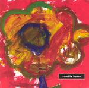

| Artist: | Tumble Home |
| Title: | Tumble Home |
| Label: | Red Sea Records RED5018 |
| Length(s): | 59 minutes |
| Year(s) of release: | 2002 |
| Month of review: | [11/2002] |
| 1) | Citizen Clone | 5.45 |
| 2) | French Postman | 4.54 |
| 3) | Tumble Home | 3.01 |
| 4) | La Mardite | 1.19 |
| 5) | Huis Clos | 6.24 |
| 6) | The Heart Is A Lonely Hunter | 4.37 |
| 7) | Idem And Rye | 2.14 |
| 8) | Judy Two | 4.19 |
| 9) | The Process | 1.23 |
French Postman is more jazzrocky, dominated by trumpet, guitar and piano, each at their own time. The trumpet's time being a little longer.
Tumble Home is a gentle piano track, accompanied by percussion. Followed by La Mardite, being a hissy electronic track. Nice intermezzo.
Huis Clos is another jazzrocky one, not particularly interesting.
The trumpet in The Heart Is A Lonely Hunter reminds me of Miles Davis' later works. This sound is a drastic improvement on the shrillness of the previous tracks. Ottevanger's spoken vocals (somewhat like Lou Reed's) give the track an extra dimension the others miss direly.
Idem And Rye is a nice instrumental bit.
Judy Two is classic bass, piano and drums, with the occasional trumpet. The shrillness of the trumpet seems to hide the nice atmosphere created by the other instruments. The oncoming of the voice gives the track a pleasant turn, with guitar and trumpet even creating something avant gardish towards the end.
The Process finishes the album with what, well, is an intermezzo.